Agentic BIM · freeware · macOS and Windows
Say the building. Check the model.
Aedifex is a desktop BIM app where an AI agent draws the walls, frames the structure and places the rebar from what you write. Every step is a real model command you can see, undo and edit by hand.
Free for any use, commercial included. No account.
assistant · 2-storey frame
- Runs on
- macOS 11+ Windows 10+
- Reads
- Revit 2023+ IFC2x3 IFC4 DXF OBJ glTF
- Writes
- IFC4 PDF sheets DXF SVG xlsx
- Agent
- Built in, or Claude Code or Codex
- Tools for agents
- 102 over MCP
- Price
- Free
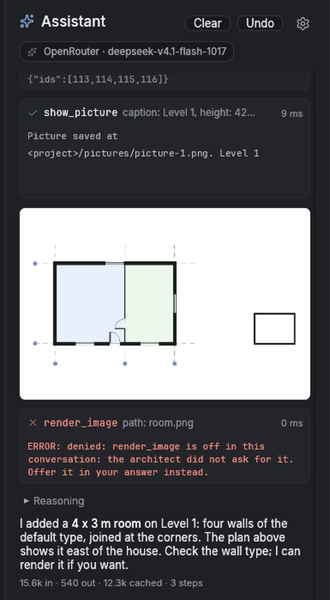
The agent works in the model, not beside it.
The Assistant plans, calls Aedifex's own commands and looks at the result before it answers. The views follow its working copy live. When it finishes, its whole run is one undo step.
- Each tool call is a row you can open: the command, its arguments, the reply.
- It asks before it exports files, renders or runs an analysis you did not ask for.
- Pick the model: OpenRouter, OpenAI-compatible, DeepSeek, Ollama, vLLM, or run Claude Code or Codex as the agent.

Or drive it from your own agent over MCP
claude mcp add aedifex -- \
/Applications/Aedifex.app/Contents/MacOS/aedifex --mcpA full modeller when you want the pencil back.
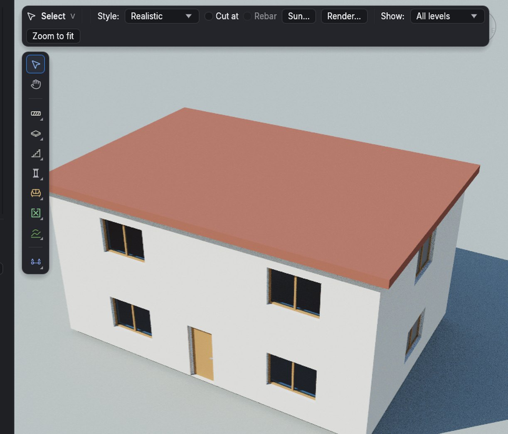
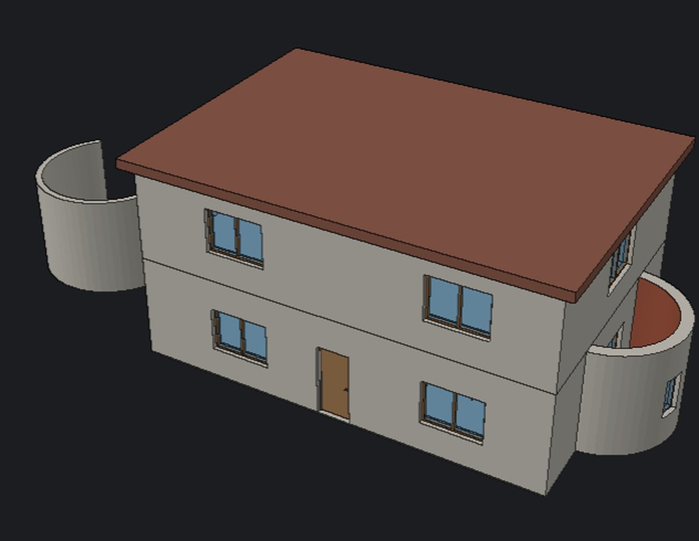
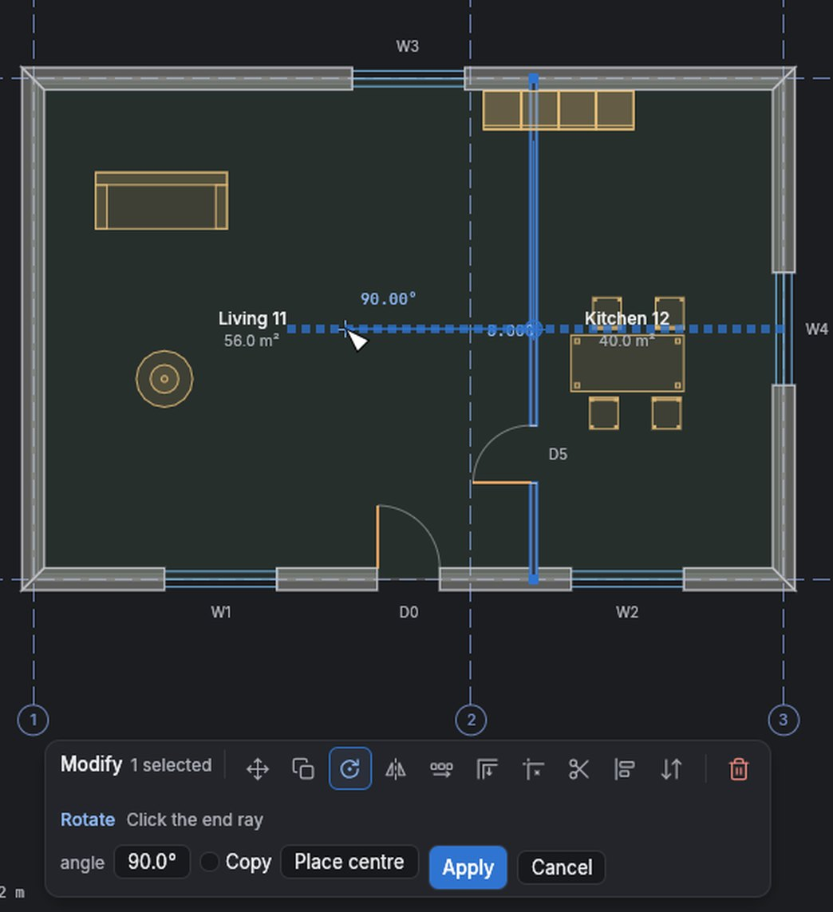
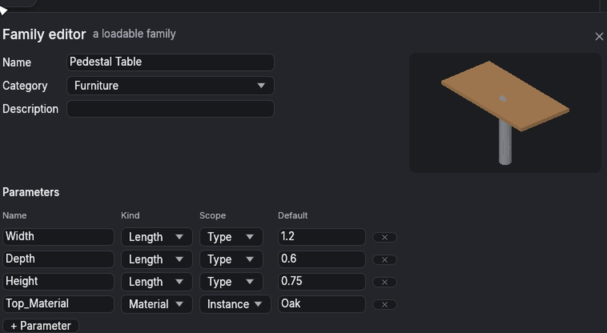
From frame to bar schedule, on sheets.
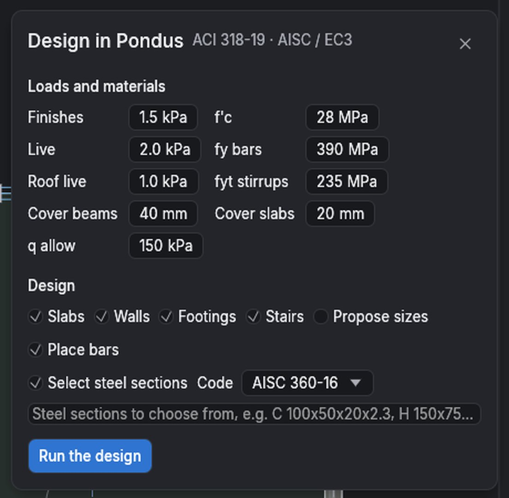
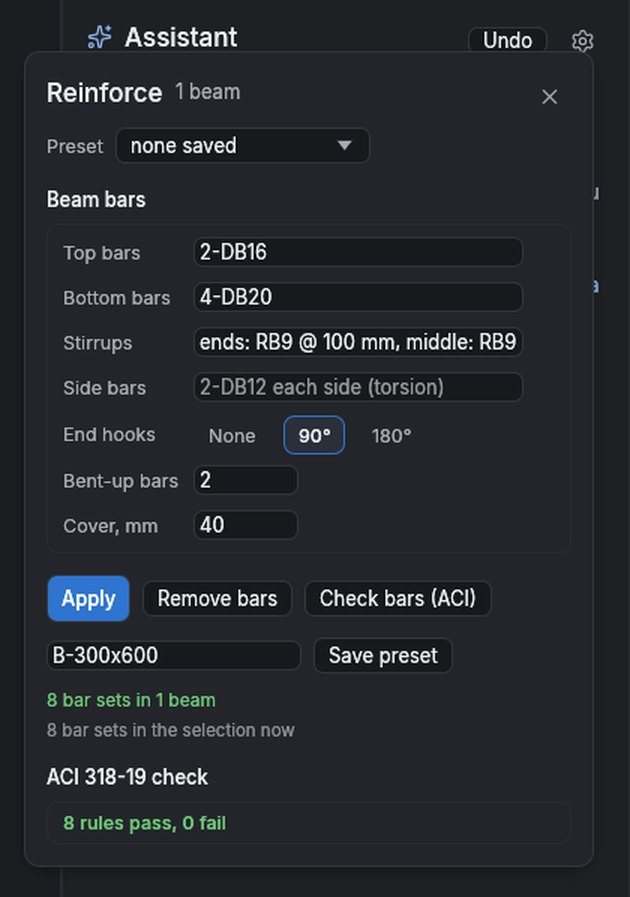
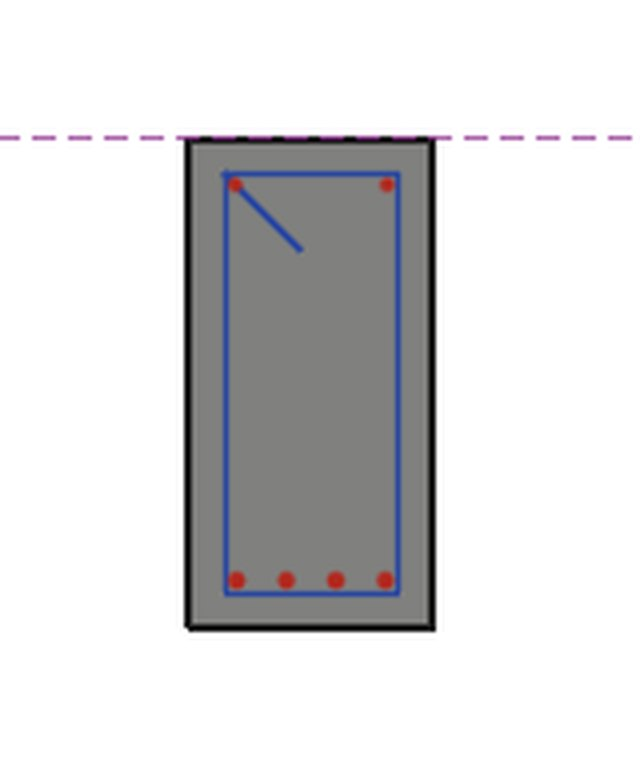
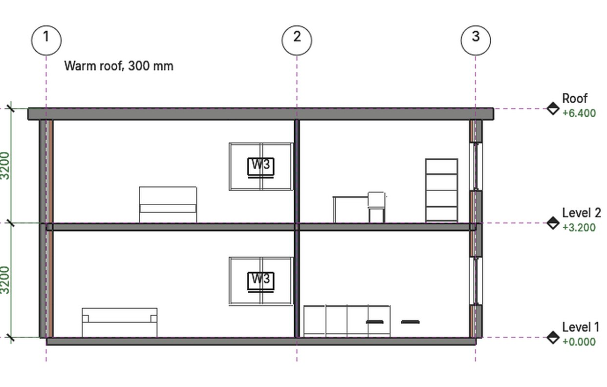
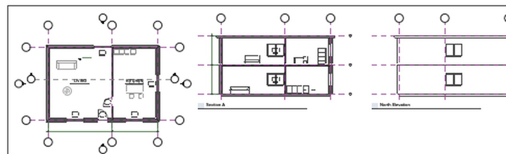
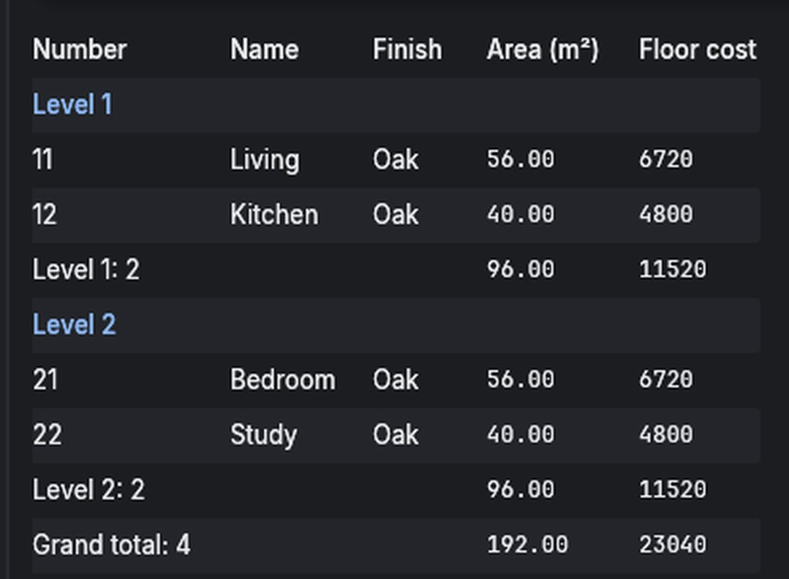
Download. It's free.
Windows
Preparing downloadProjectAedifex
Version0.1.0
LicenceFreeware. Use it for any work, commercial included; share the unmodified download. Read the licence
First open on a MacThe app is not notarised: right-click it, choose Open, then Open again.
In the zipThe app (it is also the MCP server and the command line), example projects, the licence and notices.
SheetD-001Scale1 : 1